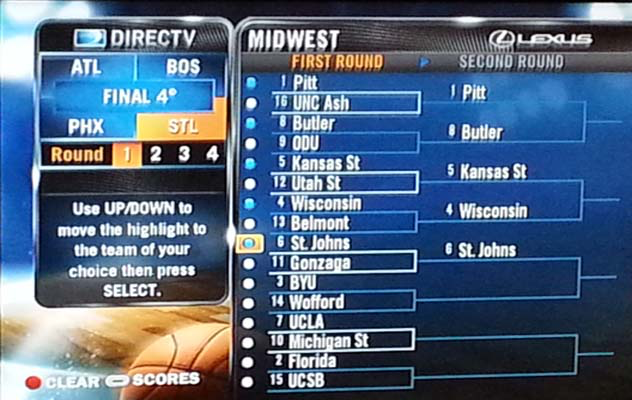
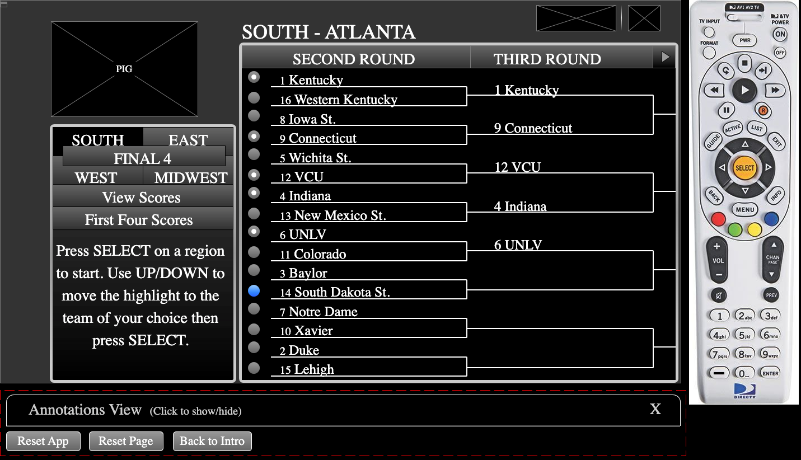
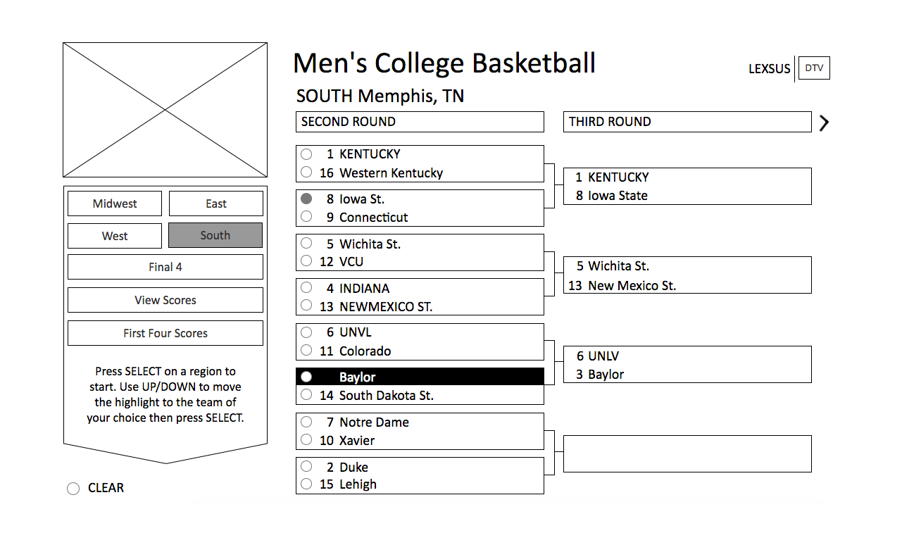

March Madness TV App

Overview
Above is a mockup of the NCAA Men's National Championship Basketball Tournament Directv TV app used by millions of basketball fans and Directv customers. I worked alongside Visual UI Designers to implement a graphical layer that would achieve the intended visual improvements with the goal of simplifying the overall user experience. I also worked closely with the UI Developer to implement the interaction design. Being in HD format afforded additional screen realestate allowing the inclusion of video feed (picture in graphic) in the upper left corner of the screen so fans wouldn't miss any of the action while checking on the tournament progress.
Previous Version
The Standard Definition (SD) version of a TV app is used for college basketball fans to make predictions of which teams they think will advance in the NCAA Men's National Championship Tournament and track the results. I was assigned as the UX Designer tasked with prototying improved interactions to the SD app as well as designing a High Definition (HD) version of the same app, identifying and addressing any usability issues.
Assessing Usability
As a fan of college basketball myself, I looked forward to testing out and analyzing the existing SD version of the app. While interacting with the SD app, I found it difficult to decern where the active highlight was on the screen as there were several highlighted areas. This caused confusion as a user and was the first issue I wanted to address. I emphasized this concern with the Visual Designers on the project to ensure that we didn't replicate these poor UI styles.
Prototyping a Solution
I created interactive wireframes to demonstrate to developers how the interactions should work for the update to the SD app as well as the new HD version.

Previous SD App

Prototype for SD update

Wireframe for HD update
{kind=link}
{kind=link}
{kind=link}
Mockups
Design Iterations
After several iterative rounds of wireframes and prototyping, the ux and interaction design had been approved and now the UI Visual Designers could design the visual layer of the app. I was sure to work closely with them on this a I did not want a repeat of the usability/accessability issues that were present in the current SD app. Nonetheless, the designers produced designs that looked solid from a graphics standpoint but had multiple blue and yellow highlighted areas. This was a problem because it was still difficult to discern the active button.
Conclusion
In my role as a UX Designer at Directv, I was responsible for deisigning not only HTML 5 tv sports apps like these, but I was also responsible for designing features of the core UI for the set-top-box. Though the tv apps did not have to follow the same technical rules as the core features, maintaining only one perceivably active element in the UI accross the tv experience was a key fundamental guideline on our team. In the end, compromises were made to reduce the amount of very bright UI elements that could be confused with the active button. The app was launched successfully and it was a lot of fun making tournament predictions and interacting with the app while enjoying the basketball games.